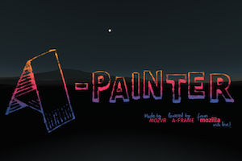
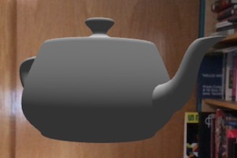
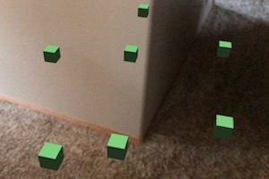
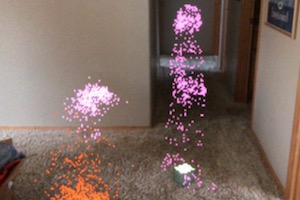
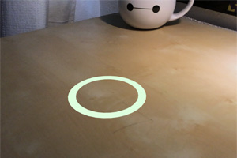
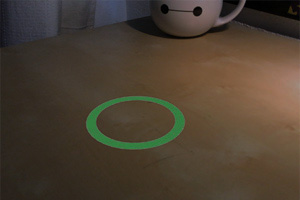
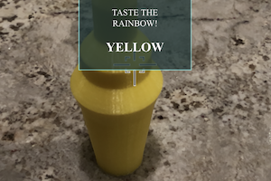
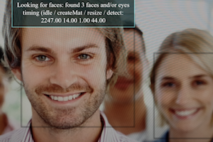
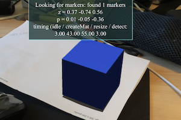

Samples
-
A-Painter
wxrv
Draw in 3D
 -
A-painter fox
wxrv
A-Painter Fox
-
A-painter Balrog
wxrv
A-Painter Balrog
Simple Examples
-
Simplest AR
source
Use Three.js to position the Utah Teapot in an augmented reality scene.
 -
Anchors
source
Position boxes in space and receive updated positions using ARKit anchors.

-
Hit testing
source
Find anchors by tapping to search for surfaces.
 -
Peoples
source
Place animated people on surfaces.
 -
Boom box
source
A shiny boom box in an environment map
-
Reticle
source
Place a reticle on surfaces.
 -
Light
source
Place a reticle on surfaces with light estimation.
 -
Simple CV
source
Show average world brightness to demonstrate simple computer vision.
 -
OpenCV Face
source
OpenCV face detector.
 -
OpenCV Markers
source
OpenCV Aruco marker detector.
